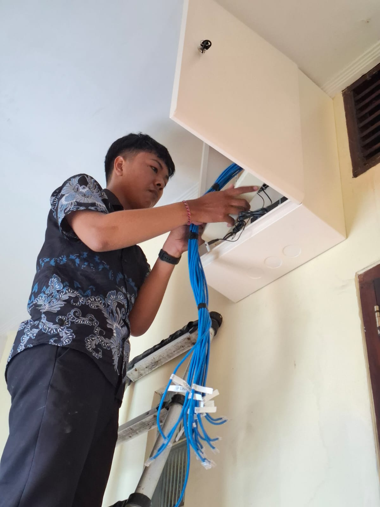

Saya adalah seorang Teknisi Jaringan
Saya adalah teknisi jaringan yang berpengalaman untuk melakukan instalasi jaringan lokal, melakukan konfigurasi perangkat jaringan seperti Mikrotik, Ruijie, dan TP-Link. Saya juga terbiasa melakukan maintenance network, seperti melakukan troubleshooting pada kendala yang dialami oleh costumer.
Karir saya...
Saat ini saya bekerja sebagai teknisi jaringan pada salah satu penyedia layanan internet di Bali, dengan tanggung jawab menangani jaringan untuk pelanggan, termasuk di sektor hospitality di beberapa daerah. Saya terbiasa melakukan instalasi, pemeliharaan, dan troubleshooting jaringan. Selain bekerja, saya juga sedang menempuh pendidikan S1 Rekayasa Sistem Komputer di INSTIKI.